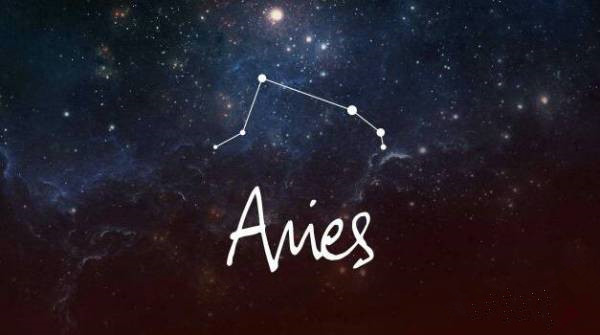
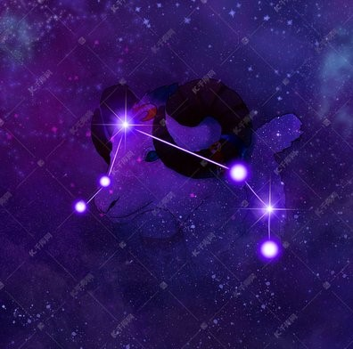

迪萨亚国王马斯塔和王后妮菲莉育有两个孩子，分别是儿子弗列克和女儿荷伦，弗列克在躲避继母的杀害，和妹妹荷伦一块骑着天神宙斯所赠的可在天空飞行的金毛羊逃亡，在中途，弗列克的妹妹不小心回头掉入海中死了，而他伤心到达了黑海东方的国度，受到当地爱耶铁斯王的报护。
弗列克为报答救命之恩，剥了金毛羊的毛皮，献给爱耶铁斯王。爱耶铁斯王于是将这张毛皮，挂在森林的树中，让一条永不睡觉的龙守护着。 而白羊座就是纪念这只金毛羊的星座。
